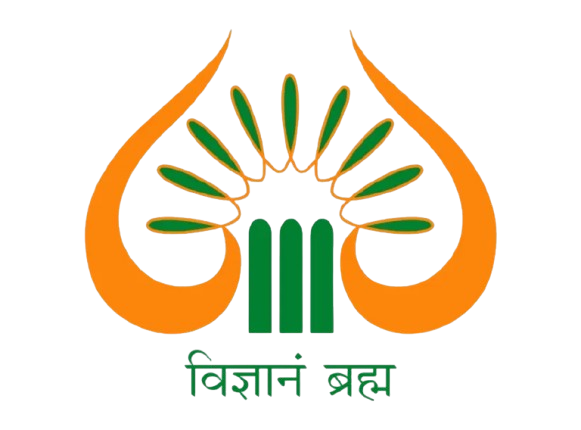

Hi, I'm Anurag 👋🏻
AI/ML Engineer with a first-author paper accepted at NLPIR 2026 (Springer), specializing in Natural Language Processing, Deep Learning, transformer fine-tuning, and retrieval-augmented generation (RAG). I am pursuing a B.Tech in Computer Science and Engineering at Shri Mata Vaishno Devi University.
Outside of work, you can find me…
Journey
-
EduspheriaSoftware Development Intern · RemoteApr 2026 – Present
- Integrated AI features into Saksham, a 97K-LOC, 60+ page React 18 platform: DALL·E 3 poster generation, AI question-paper generation, and a WebSocket conversational assistant.
- Implemented role-based access control across six user roles and consumed 30+ Django REST Framework endpoints with token authentication.
- Designed five-plus gamified learning exercises and integrated 100+ PhET simulations with TTS narration for Grades 5–12.
-
IndependentFreelance Software & AI Engineer · RemoteDec 2023 – Present
- Delivered client AI/ML, NLP, and RAG solutions using LLM APIs, embeddings, vector databases, and end-to-end machine-learning workflows.
- Built backend and web applications with Python, Django, Django REST Framework, Node.js, REST APIs, and SQL/PostgreSQL.
- Conducted dataset preparation, preprocessing, model implementation, evaluation, and technical documentation for client deliverables.
-

Shri Mata Vaishno Devi UniversityB.Tech, Computer Science and EngineeringAug 2023 – May 2027- CGPA: 7.5/10 through Semester 6.
- Coursework: Deep Learning, Natural Language Processing, Machine Learning, and Data Structures & Algorithms.
Research
Projects
FEATURED · NLPRoBERTa Sentiment ClassificationFirst-author paper on context-aware sentiment classification of social media text using RoBERTa transformersPythonPyTorchHugging Face TransformersRoBERTaAdamW96%accuracy0.95macro-F118K+labeled samples
Designed and fine-tuned an end-to-end RoBERTa-based transformer pipeline for 3-class sentiment classification on 18,170 YouTube comments, achieving 96% accuracy and 0.95 macro-F1. Addressed severe class imbalance (62.6% positive vs. 12.9% negative) via weighted cross-entropy loss and label smoothing. Published first-author at NLPIR 2026, Springer LNNS.
NLPNL2SQL: Text-to-SQL ModelNatural language to SQL generation with T5-smallPythonT5QLoRAWikiSQL80K+query pairs4GBVRAM budget
Fine-tuned T5-small for text-to-SQL generation on WikiSQL, using QLoRA to keep training within a 4GB VRAM budget.
RAGPragya: Local RAG Research AssistantLocal research assistance with CPU-friendly retrievalLlama3ChromaDBMiniLMStreamlit<400msmean latency0cloud services
Built a fully local, zero-cloud research assistant that translates complex papers for technical and lay audiences. Section-aware PyMuPDF chunking and ChromaDB retrieval improved relevance over naive chunking.
Generative AIAI Research Paper Writer Automated research paper generation with LLM pipelinesPythonOpenAI APIDeepSeekQuickChart10+pipeline modulesReal-timestreaming output
Engineered an end-to-end automated research paper generation pipeline producing publication-ready DOCX documents from a single topic input. Designed a modular 10+ module NLP pipeline with AI-driven outline generation, section writing, reference synthesis, and automated figure/table generation via QuickChart API.
SecurityVault: Local Password Manager Fully local, zero-cloud encrypted credential storageElectronNode.jsSQLiteArgon2idAES-256encryption0network calls
Built a fully local-only password manager using Electron with Argon2id key derivation and AES-256-GCM authenticated encryption. Implemented SQLite with WAL checkpointing for durable storage, designed with strict security architecture: no network calls, no telemetry, minimal attack surface.
Simulation Emergent Flocking Simulation (Boids Algorithm) Real-time multi-agent flocking powering this site's own hero background JavaScript HTML5 Canvas Algorithms requestAnimationFrame ~100agents 4flocks 60fpstarget View Live
Implemented Craig Reynolds' Boids algorithm (1986) from scratch in vanilla JavaScript with zero dependencies. Each of ~100 agents follows three local rules — separation, alignment, cohesion — producing emergent flocking behavior with no central controller. Extended with per-boid persistent coloring (HSL-assigned at spawn), mouse-reactive scatter response, density-limiting to prevent over-clustering, and multi-flock support with dynamic split/merge as boids drift between groups.
Skills
Programming
 SQLData Structures
& Algorithms
SQLData Structures
& AlgorithmsML / DL
NLP
LLM / GenAI
Systems & Infra
 LinuxCUDA
LinuxCUDA Docker
DockerRecognition
First-author paper, "RoBERTa-Driven Transformer Framework for Context-Aware Sentiment Classification of Social Media Text," accepted at the International Conference on Natural Language Processing and Information Retrieval (NLPIR 2026), published in Springer's Lecture Notes in Networks and Systems. View details
Directing AI initiatives and technical workshops on Deep Learning and Computer Vision for 100+ students at Shri Mata Vaishno Devi University.
Among 1,360 finalist teams selected from 68,766 nationwide. Built KrishiRakshak, an AI platform for early wheat disease detection that fuses satellite imagery, drone surveillance, and farmer-uploaded leaf images to generate real-time disease-risk maps and predictive advisories.
The State-Level Five-Day Skill Development Programme on Soft Computing and Applications, organized by the School of Computer Science and Engineering, SMVDU, under RP-128, held 3rd–7th February 2025. Received a Certificate of Appreciation for organizing contributions and a Certificate of Participation for the programme.